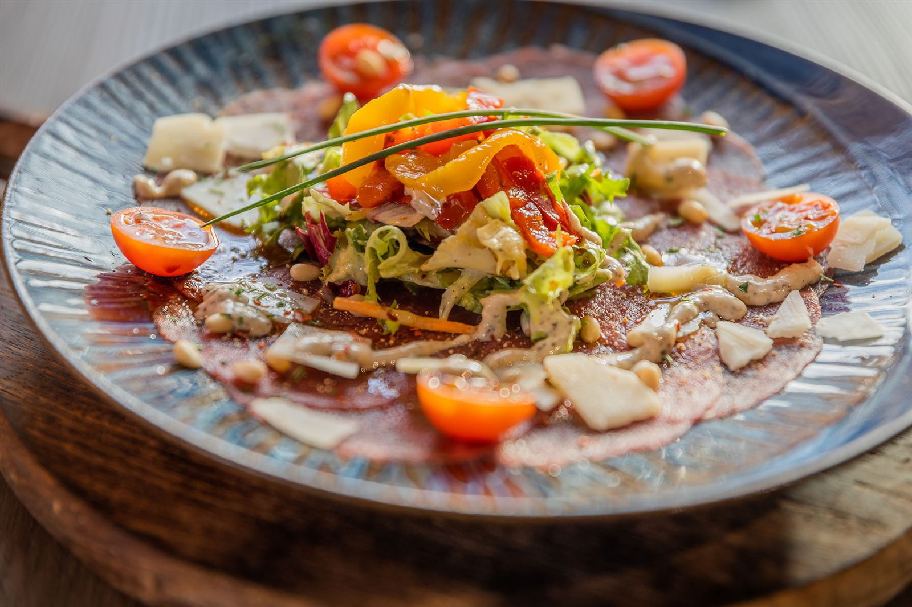
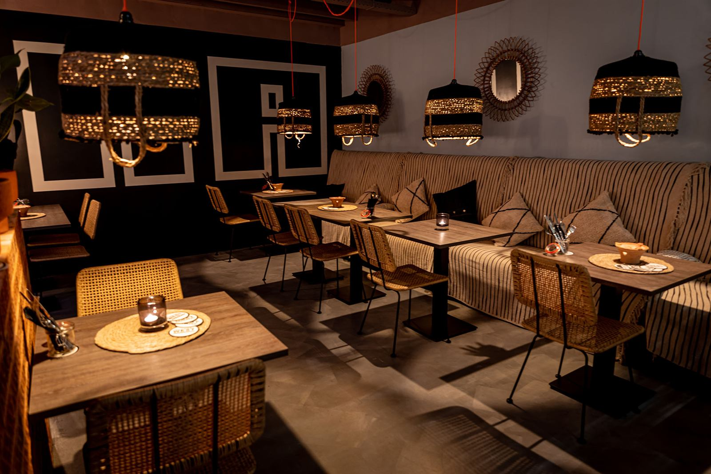
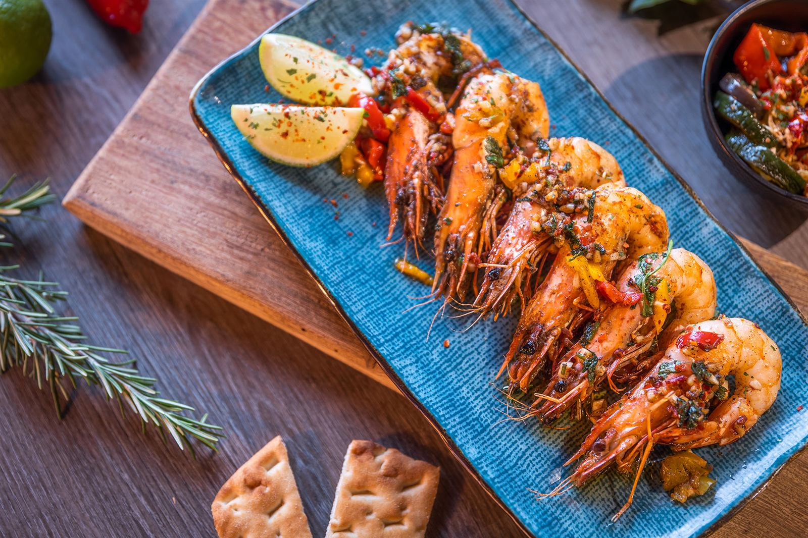
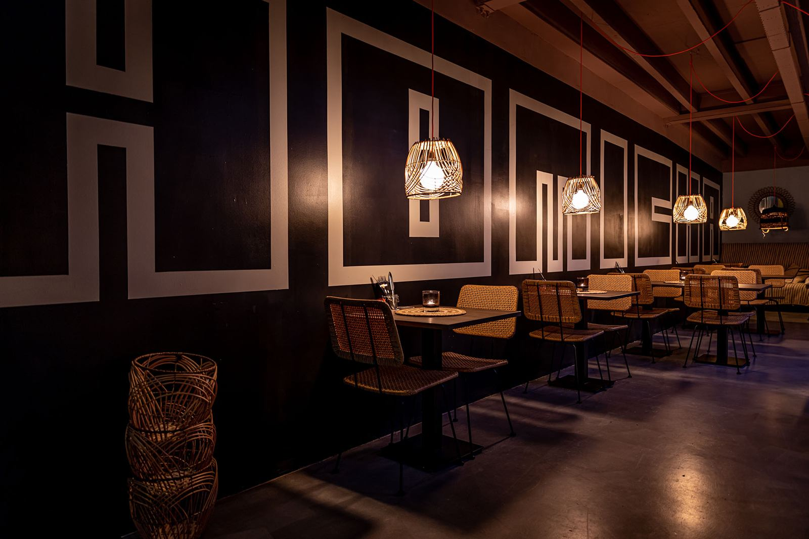
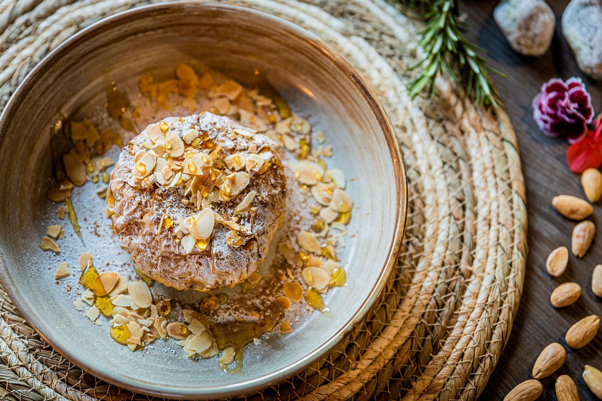
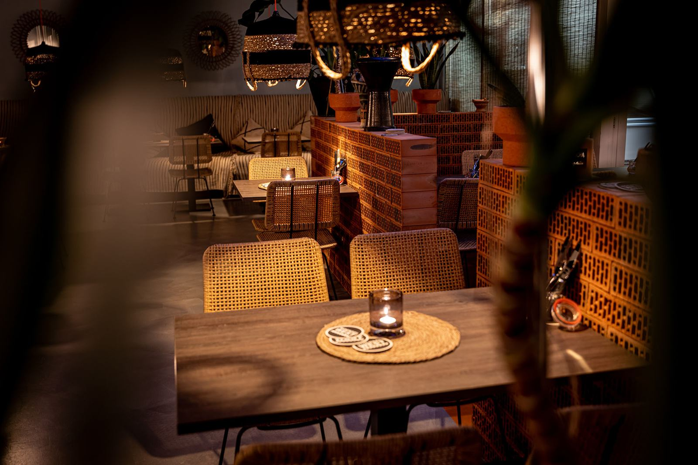

Carpaccio 14
Waar Chomicha vooral om bekendstaat, naast de spareribs.




Celsiusplein 28 · Eindhoven
Tajine, couscous, carpaccio en kalfsspareribs van de houtskool-bbq. Alles 100% halal.
Waar Chomicha vooral om bekendstaat, naast de spareribs.
Van de houtskool-bbq, zoet of pikant. Mals en vol van smaak: volgens veel gasten de lekkerste van Eindhoven en omstreken.
Naar de grillgerechtenTwijfel je? Proef van alles een beetje: soep, tajines, brood en bijgerechten. Vanaf 2 personen.
Wat zit erin38 per persoon
Een mix van heerlijke traditionele gerechten. U start met harira soep en brood met tapenades. Daarna komen de tajines op tafel: kefta, kip, vis en gestoofd rundvlees, met brood en als bijgerecht couscous of saffraanrijst.

Dit restaurant is genoemd naar mijn moeder, die mij door de jaren heen de fijne kneepjes van deze fantastische keuken heeft geleerd.
Al ruim 17 jaar een begrip in Eindhoven, inmiddels 8 jaar midden in de hippe wijk Woensel-West, op het Celsiusplein. Bij Chomicha draait het om lekker eten, gezelligheid en volop keuze. Kom gezellig tafelen met vrienden, familie of je date.
Een keuken van rijke kruiden, aromatische specerijen en zoete en hartige smaken samen. Couscous, tajine, harira en muntthee horen erbij, net als gastvrijheid en samen delen aan tafel.
Gerechten en ingrediënten gecombineerd tot iets nieuws. Zo staan we vooral bekend om onze carpaccio en de kalfsspareribs van de houtskool-bbq, en dat alles 100% halal.

Marokkaanse en halal catering, met liefde en compleet verzorgd. Bij u op locatie, of met het hele restaurant voor uzelf.
Complete halal catering, afgestemd op uw gezelschap, wensen en budget. Onze vakkundige medewerkers verzorgen het eten, de presentatie, bediening en planning, zodat u zelf volop kunt genieten. Een uitgebreid Marokkaans buffet met verse tajines, salades en tapenades, warme en koude sauzen en brood. Ook in combinatie met een bbq op locatie.
We kunnen ook borden, bestek, servetten en buffettafels leveren.
Restaurant Chomicha, inclusief het terras, is exclusief af te huren voor gezelschappen tot 100 personen. Van een sfeervol diner tot een compleet bedrijfs- of familiefeest: wij zorgen voor een warme ambiance, heerlijke gerechten en gastvrije bediening.
Vraag een vrijblijvende offerte op maat aan. Uw gelegenheid, onze gastvrijheid.
Zeker! We hebben een aantal creatieve vegetarische en vegan gerechten op de kaart. Vraag gerust ons team om advies.
Reserveren wordt aangeraden, vooral in het weekend. Maar spontaan langskomen mag natuurlijk altijd: als er plek is, ben je welkom!
Ja, al onze gerechten en drankjes zijn 100% halal.
Laat het ons vooraf weten en we doen ons best om rekening te houden met je wensen. Ons personeel helpt je graag met de juiste keuzes.
Ja! Catering op locatie, of het hele restaurant inclusief terras afhuren voor je verjaardag, bruiloft, bedrijfsfeest of andere viering. Neem gerust contact op om de mogelijkheden te bespreken.
Vooral in het weekend is reserveren aan te raden. Liever bellen? Dat kan op 040 246 0402.
Celsiusplein 28
5621 BN Eindhoven
| Maandag en dinsdag | gesloten |
|---|---|
| Woensdag t/m zondag | 17:00 tot 00:00 |